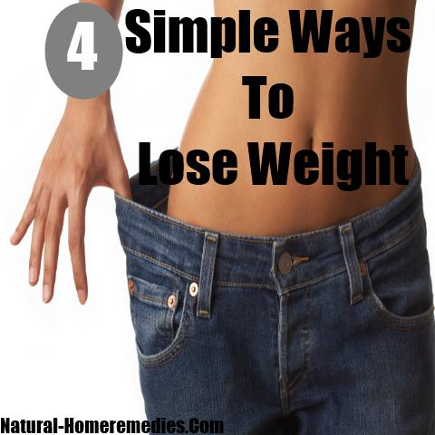

Amazon.fr - The Easy Way to Lose Weight - Carr, Allen - Livres
 Passer au contenu principal .fr Votre adresse de livraison: République Tchèque Bonjour, Identifiez-vous Compte et listes Retours et Commandes 0 Panier Toutes Ventes Flash Prime Day Meilleures Ventes Amazon Basics Dernières Nouveautés Prime Service Client Livres Coupons Cuisine et Maison High-Tech Informatique Idées cadeaux Jeux et Jouets Guide de l’acheteur Ebooks Kindle Jeux vidéo Mode Sports & Activités en plein-air Santé et produits d’hygiène Auto et Moto Chèques-cadeaux Bébé Vendre sur Amazon Beauté Livraison Gratuite Listes de Souhaits Prévoyez et Économisez Support Client Accessibilité Livres anglais et étrangers Recherche détaillée Nos rubriques Nouveautés Meilleures ventes Bonnes affaires Livres audio Tous les livres Vendez ! Livres › Santé, Forme et Diététique › Alimentation, régimes et diététique Partager Vous l'avez déjà ? Vendez sur Amazon Repliez vers l'arrière Repliez vers l'avant Ecoutez Lecture en cours Interrompu Vous écoutez un extrait de l'édition audio AudibleEn savoir plus Voir les 2 images
Suivre l'auteur
Allen Carr + SuivreAuteurs similaires à suivre
+ + + Voir plus de recommandations Une erreur est survenue. Veuillez renouveler votre requête plus tard.OK
The Easy Way to Lose Weight Broché – 15 août 2014
Édition en Anglais de Allen Carr (Auteur) › Consulter la page Allen Carr d'Amazon Trouver tous les livres, en savoir plus sur l'auteur. Voir résultats de recherche pour cet auteur Etes-vous un auteur? Infos sur La Plate-forme Auteurs Allen Carr (Auteur) 3,9 sur 5 étoiles 303 évaluations Livre n° 2 sur 12 dans la série Allen Carr's Easyway Afficher tous les formats et éditions Sorry, there was a problem loading this page. Try again. Prix Amazon Neuf à partir de Occasion à partir de Broché "Veuillez réessayer" 16,15 € 15,62 € 11,21 € Broché16,15 € 4 D'occasion à partir de 11,21 € 5 Neuf à partir de 15,62 € Livraison GRATUITE (0,01€ pour les livres) en point retrait. Détails Récupérez votre colis où vous voulez quand vous voulez. La livraison est GRATUITE sans minimum d'achats (0,01€ pour les livres). Les membres Amazon Prime bénéficient de livraisons gratuites illimitées toute l'année Choisissez parmi 20 000 points retrait en France et en Belgique, incluant points relais et consignes automatiques Amazon Lockers Comment commander vers un point retrait ? Trouvez votre point retrait et ajoutez-le à votre carnet d’adresses Sélectionnez cette adresse lors de votre commande Plus d’informations
Améliorez vos achats
En lire plus En lire moins click to open popoverOffres spéciales et liens associés
Gratuit : téléchargez l'application Amazon pour iOS et Android et facilitez vos achats sur smartphones et tablettes ! Découvrez les avantages de l'application Amazon.Amazon Business Pour les professionnels : prix hors taxes, paiement à 30 jours et factures téléchargeables. Créez un compte gratuit ! Publiez votre livre sur Kindle Direct Publishing en format papier ou numérique : c'est simple et gratuit et vous pourrez toucher des millions de lecteurs. En savoir plus ici
Produits fréquemment achetés ensemble
Les clients ayant acheté cet article ont également acheté
Page 1 sur 1 Revenir au début Page 1 sur 1 Previous page Allen Carr's Easy Way to Stop Smoking: Read this book and you'll never smoke a cigarette again Allen Carr 4,5 sur 5 étoiles 4 478 Broché 12,43 € Next pageProduits liés à cet article Sponsorisé Masquer les évaluations
Page 1 sur 1 Revenir au début Page 1 sur 1 Page précédente des produits sponsorisés connexes Evaluation The Art of Persistence: Stop Quitting, Ignore Shiny Objects and Climb Your Way to S Michal Stawicki 129 Édition Kindle 4,21 € Evaluation THE POWER OF ATTITUDE IN SUCCESS: Enhance Self-belief, Build Success Mindset, Start Pradip N Das 10 Livre de poche 21,78 € Evaluation Nouveauté The Power of Reading: Great Ways to Build Good Habits, Acquire Knowledge, Develop G Pradip N Das 10 Livre de poche 22,62 € Evaluation Red Light Therapy: Miracle Medicine Mark Sloan 530 Livre de poche 11,93 € Evaluation Directed by Purpose: How to Focus on Work That Matters, Ignore Distractions and Man Michal Stawicki 82 Livre de poche 9,59 € Evaluation Nouveauté The Art of Managing Success: A Powerful Book to Learn the Side-effects of Success, Pradip N Das Livre de poche 19,16 € Evaluation Change Your Life in 10 Minutes a Day: The Deep Dive into Applications of the 10-Min Michal Stawicki 33 Livre de poche 20,56 € Evaluation Mon planificateur de menus: Organise, suis et planifie tes menus de la semaine : Un Papeterie Bleu 351 Livre de poche 5,99 € Evaluation A Personal Mission Statement: Your Road Map to Happiness Michal Stawicki 143 Livre de poche 8,00 € Evaluation Mystic and the Secret of Happiness Anne-Claire Szubaniska 124 Livre de poche 14,95 € Page suivante des produits sponsorisés connexesDescription du produit
Biographie de l'auteur
Allen Carr is the author of the international bestseller The Easy Way to Stop Smoking. His books have sold over 15 million copies to date in more than 40 different languages. His unique and highly successful Easyway method has also been applied to weight loss, revealing what makes us eat too much and how we can break free. The Easy Way to Lose Weight book trains the mind for healthy eating, avoiding all the feelings of deprivation and frustration associated with diets. Dites-le à l'éditeur :J'aimerais lire ce livre sur Kindle !
Vous n'avez pas encore de Kindle ? Achetez-le ici ou téléchargez une application de lecture gratuite .
Détails sur le produit
Éditeur : Arcturus Publishing; Pap/Com édition (15 août 2014) Langue : Anglais Broché : 191 pages ISBN-10 : 1784044954 ISBN-13 : 978-1784044954 Poids de l'article : 327 g Dimensions : 15.24 x 1.91 x 22.23 cm Classement des meilleures ventes d'Amazon : 94,190 en Livres anglais et étrangers ( Voir les 100 premiers en Livres anglais et étrangers ) 141 en Homéopathie 614 en Guides et conseils pour maigrir (Livres) 3,223 en Naturopathie (Livres) Commentaires client : 3,9 sur 5 étoiles 303 évaluationsProduits liés à cet article Sponsorisé Masquer les évaluations
Page 1 sur 1 Revenir au début Page 1 sur 1 Page précédente des produits sponsorisés connexes Evaluation Get Up: A 12-Step Guide to Recovery for Misfits, Freaks, & Weirdos (English Edition) Bucky Sinister 57 Édition Kindle 10,33 € Evaluation Le complexe de la tortue: Surmonter ses auto-sabotages et oser briller ANNE-CLAIRE FROGER 114 Livre de poche 14,99 € Evaluation En finir avec toutes les addictions: Les 5 piliers de la méthode ADIOS - Activation Mme Sarah Nacass 31 Livre de poche 38,00 € Evaluation Nouveauté En finir avec toutes les addictions: Les 5 piliers de la méthode ADIOS - Activation Sarah Nacass Édition Kindle 38,00 € Evaluation Alcohol and You: How to Control and Stop Drinking (Self Help Book 1) (English Edition) Lewis David 314 Édition Kindle 5,99 € Evaluation Samadhi: Unity of Consciousness and Existence Ivan Antic 300 Livre de poche 10,54 € Evaluation Soul Guide On Planet Earth Ivan Antic 78 Livre de poche 11,02 € Evaluation Como ser un imán para las personas: 62 Estrategias simples para construir relacione Marc Reklau 401 Livre de poche 15,20 € Evaluation The 10-Day Alcohol Detox Plan: Stop Drinking Easily & Safely (Self Help Book 1) (En Lewis David 539 Édition Kindle 5,97 € Evaluation Mon planificateur de menus: Organise, suis et planifie tes menus de la semaine : Un Papeterie Bleu 351 Livre de poche 5,99 € Page suivante des produits sponsorisés connexesLes clients ayant consulté cet article ont également regardé
Page 1 sur 1 Revenir au début Page 1 sur 1 Previous page Next pageCommentaires client
3,9 sur 5 étoiles 3,9 sur 5 303 évaluations 5 étoiles 53% 4 étoiles 14% 3 étoiles 15% 2 étoiles 9% 1 étoile 9% Comment les évaluations sont-elles calculées ? Pour calculer l'évaluation globale en nombre d'étoiles et la répartition en pourcentage par étoile, nous n'utilisons pas une moyenne simple. À la place, notre système tient compte de facteurs tels que l'ancienneté d'un commentaire et si le commentateur a acheté l'article sur Amazon. Il analyse également les commentaires pour vérifier leur fiabilité. Meilleures évaluations Le plus récent Meilleures évaluationsMeilleures évaluations de France
Il y a 0 commentaire et 0 évaluations venant de FranceMeilleurs commentaires provenant d’autres pays
Traduire tous les commentaires en français Sue 5,0 sur 5 étoiles Life changing! Commenté au Royaume-Uni le 19 janvier 2019 Achat vérifié I read this book after it was recommended to me. Allen Carr suggests to read the book with an open mind, so I did, I actually read the whole book in one day. I have never looked back! I now only desire to eat fresh food from Mother Nature, I don’t even see manufactured food as food! I don’t have any cravings for these foods any more, I am free of my sugar addiction too. All I enjoy eating is fruit, veg, pulses, nuts, seeds etc etc. I never use to crave an apple! I do now 😄, fruit was at the bottom of my food pile, now it’s at the top. This book has changed my life, I amLoosing weight naturally, I am never hungry and I really enjoy eating like I did before but now it’s natural foods. I have so much more energy as well. Life changing - read the book with an open mind and I hope it changes others lives like it has mine! En lire plus 16 personnes ont trouvé cela utile Signaler un abus Traduire les commentaires en Français Simon C 4,0 sur 5 étoiles Another weight loss book! Commenté au Royaume-Uni le 24 septembre 2019 Achat vérifié Good book. I'm still fat though lol! Good tool as many of these books are but you have to want to do it. Otherwise its just another weight loss book for the shelf. En lire plus 9 personnes ont trouvé cela utile Signaler un abus Traduire les commentaires en Français Jane Large 5,0 sur 5 étoiles Inspirational Commenté au Royaume-Uni le 6 octobre 2018 Achat vérifié Very easy to read and understand. The cd for when you finish the book is excellent. So far so good. En lire plus 6 personnes ont trouvé cela utile Signaler un abus Traduire les commentaires en Français Amazon Customer 3,0 sur 5 étoiles Very good. Commenté au Royaume-Uni le 18 octobre 2020 Achat vérifié I bought this to help me eat less sugar and bad foods. I does work initially but wanes a bit after a while. Does need some will power but informative and does change toy views on processed foods. En lire plus Une personne a trouvé cela utile Signaler un abus Traduire les commentaires en Français Elaine Corner 4,0 sur 5 étoiles Recommended so I bought for my daughter who after reading Commenté au Royaume-Uni le 20 février 2016 Achat vérifié Recommended so I bought for my daughter who after reading it and with changes to her eating habits has lost over a stone in weight and feels she has so much more energy, therefore an excellent buy. En lire plus 13 personnes ont trouvé cela utile Signaler un abus Traduire les commentaires en Français Afficher tous les commentaires
Vos articles vus récemment et vos recommandations en vedette › Afficher ou modifier votre historique de navigation Après avoir consulté un produit, regardez ici pour revenir simplement sur les pages qui vous intéressent.
Retour en haut Pour mieux nous connaître À propos d'Amazon Carrières Durabilité Gagnez de l'argent Vendez sur Amazon Vendez sur Amazon Business Vendez sur Amazon Handmade Devenez Partenaire Expédié par Amazon Faites la promotion de vos produits Auto-publiez votre livre Amazon Pay › Tous nos programmes Moyens de paiement Amazon Cartes de paiement Paiement en plusieurs fois Amazon Currency Converter Chèques-cadeaux Recharge en ligne Recharge en point de vente Besoin d'aide ? Amazon et COVID-19 Voir ou suivre vos commandes Tarifs et options de livraison Amazon Prime Retours et remplacements Recyclage (y compris les équipements électriques et électroniques) Infos sur notre Marketplace Application Amazon Mobile Amazon Assistant Service Client Accessibilité Australie Allemagne Brésil Canada Chine Espagne États-Unis Inde Italie Japon Mexique Pays-Bas Pologne Royaume-Uni Émirats arabes unis Singapour Turquie Amazon Music
Écoutez des millions
de chansons AbeBooks
Livres, art
& articles de collection Amazon Web Services
Services de Cloud
Computing Flexibles Audible
Livres audio
télécharger Book Depository
Livres expédiés
dans le monde entier Kindle Direct Publishing
Auto-publiez facilement
vos livres au format numérique Offres Reconditionnées
Bonnes affaires Shopbop
Vêtements de Marque
& Mode Amazon Advertising
Ciblez, attirez et
fidélisez vos clients Amazon Business
Paiement 30 jours. Hors TVA.
Pour les professionnels. Amazon Second Chance
Transmettez, échangez,
donnez une seconde vie à vos objets Conditions générales de vente Vos informations personnelles Cookies Annonces basées sur vos centres d’intérêt © 1996-2021, Amazon.com, Inc. ou ses filiales.